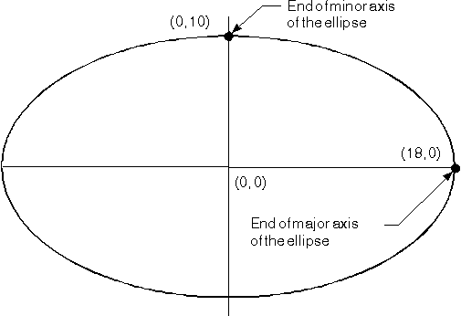
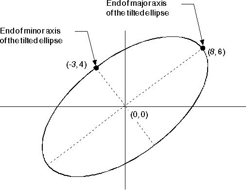

The Ellipse
For maximum accuracy, create the axes of an ellipse so that they are at right-angles to each other. You can check this by ensuring that the following equation is always true:
p x r + s x q = 0
So, to check the above example:
0 x 18 + 10 x 0 = 0
You also can define a tilted ellipse as the current arc. None of the current arc parameters for a tilted ellipse will be 0, though you should still ensure that the axes of the ellipse are at right-angles to each other. The following figure shows a tilted ellipse defined with current arc parameters of (8,6) and (-3,4).

Tilted Ellipse